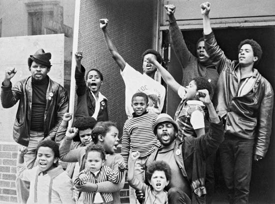

kitchenette building
 African American lives were nowhere near luxurious
during the 1960s. They were treated with little respect and many suffered through tough living conditions. There were many
areas within Chicago that were designated specifically for African American living. Often times the areas were dirty and were
not kept up with. A very common living space was known as a kitchenette building. A kitchenette building is a small apartment
building in Chicago. They first appeared in 1916 in Uptown, an area located in Chicago. Brick buildings with medium and large
apartments rented on a monthly basis were divided into one-room units, using beaver-board partitions. The resulting units were
often rented out by the week as furnished rooms, although the amount of furniture offered was marginal (Plotkin)
. Within these small living spaces consisted of two-three families all crammed into the area. There was minimal bathroom and
cooking space. Due to the small bathrooms, there were many plumbing problems which often led to unsanitary situations.
Kitchenette buildings were more prominent for African Americans. In a federal study during the 1930s, it was found that that
conditions for the African Americans were much worse than whites. They had less sunlight, space, and utilities. Life in a
kitchenette building was very crowded (Plotkin).
African American lives were nowhere near luxurious
during the 1960s. They were treated with little respect and many suffered through tough living conditions. There were many
areas within Chicago that were designated specifically for African American living. Often times the areas were dirty and were
not kept up with. A very common living space was known as a kitchenette building. A kitchenette building is a small apartment
building in Chicago. They first appeared in 1916 in Uptown, an area located in Chicago. Brick buildings with medium and large
apartments rented on a monthly basis were divided into one-room units, using beaver-board partitions. The resulting units were
often rented out by the week as furnished rooms, although the amount of furniture offered was marginal (Plotkin)
. Within these small living spaces consisted of two-three families all crammed into the area. There was minimal bathroom and
cooking space. Due to the small bathrooms, there were many plumbing problems which often led to unsanitary situations.
Kitchenette buildings were more prominent for African Americans. In a federal study during the 1930s, it was found that that
conditions for the African Americans were much worse than whites. They had less sunlight, space, and utilities. Life in a
kitchenette building was very crowded (Plotkin).
We are things of dry hours and the involuntary plan,
-  Brooks uses the term “we” as a way to address a lot of
people. She is speaking on behalf of African Americans during the 1960s. By describing them as “dry hours,” this is referring
that the people are tired and weary. Later in 2009, there is a play written titled “Things of Dry Hours” which is about the
life of a poor African American. In an article published by the New York Times about the play, it quotes, “Later we learn of
the Communist Party’s resistance to including ‘Negroes,’ dismissed as being ‘content to drift through life,’” (Isherwood)
which is a reference to the poem. Gwendolyn Brooks states, “and the involuntary plan,” meaning that the African Americans
have to go along with what is happening (segregation) and that they drift through life. A plan is usually something that is
planned, however by stating that it is involuntary, this demonstrates that they have to go with the way life was. They did not
choose the life they were given and they had to go along with how their lives were. Segregation played a drastic role on the
lives of African Americans and there was no way around it. The people suffered each day in hopes that things would be easier
and better.
Grayed in, and gray.“Dream” makes a giddy sound, not strong
- During the 1960s, life for African Americans was not easy.
Segregation was apart of everyday life and African Americans were treated with little respect. There were many key figures
that played an inspiring role in the lives of African Americans, one in particular was Martin Luther King. MLK was a leader
in the Civil Rights movement and his goal was to end segregation. In his most known speech, “I Have A Dream,” he uses his
powerful and inspirational words that eventually changes the world. Within his speech, he uses the term “I have a dream…”
followed by something he wished to see in the future, for example, MLK states, “I have a dream that one day this nation will
rise up and live out the true meaning of its creed: ‘We hold these truths to be self-evident, that all men are created equal.’”
(King 4). Gwendolyn Brooks is influenced by his persuading words and uses the word “Dream” in her poem. She includes the word
in quotes, as a reference to MLK and because he is someone who had a dream during the time she wrote the poem. She includes
that the word “makes a giddy sound,” meaning that when the word is spoken, it gives someone a very inspired and motivated
feeling.
Like “rent,” “feeding a wife,” “satisfying a man.”
But could a dream send up through onion fumes
Its white and violet, fight with fried potatoes
And yesterday’s garbage ripening in the hall,
Flutter, or sing an aria down these rooms
Even if we were willing to let it in,
Had time to warm it, keep it very clean,
Anticipate a message, let it begin?
We wonder. But not well! not for a minute!
Since Number Five is out of the bathroom now,
We think of lukewarm water, hope to get in it.